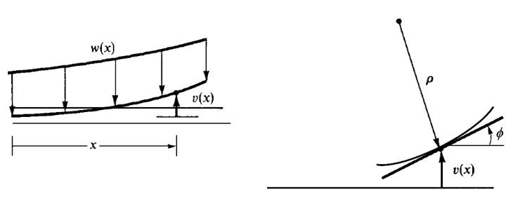
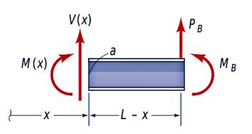

Materyel Mekaniği - 4
Tek Öğe Direngenlik (Stiffness) Matrisi
Tek bir bağlantı parçasının direngenliğini hesaplamak istiyoruz, bunu hem eksenel yöndeki yer değişmeleri, hem de bükülme, eğilme gibi eksene dik uygulanan yönlerden de hesaplamak istiyoruz.
Makaskiriş
Önce makaskiriş (truss) mekaniği ile başlayalım. Makaskiriş konusuna [4]'te değinilmişti. Daha önce [1]'de gördüğümüz formülü hatırlarsak,
$$ E = \frac{P/A}{\delta / L} $$
Biraz farklı notasyon [3, sf. 344] ile buna
$$ \Delta = \frac{NL}{AE} $$
diyebiliriz, ki $E$ yine Young'in Genliği, $N$ uygulanan kuvvet, $A$ çubuk alanı, $L$ uzunluğu.

Makaşkiriş öğelerinin sadece eksenel yüklenebildiklerini biliyoruz, eğer üstteki figür gibi bir senaryo olsaydı, alt uçtan $q'_N$ kuvveti uygulanmış, diğer nokta bir pime bağlı, bu durumda önceki formülü değiştirip [4, sf. 542]
$$ \Delta = \frac{NL}{AE} \to \frac{\Delta AE}{L} = N $$
ve $\Delta$ yerine yer değişim $d_N$, kuvvet $N$ için $q'_N$ kullanırız,
$$ q'_N = \frac{AE}{L} d_N $$
Pimli noktada denge durumunda üstteki kuvvete tepki olarak ona eşdeğerde ama eksi yönde bir kuvvet oluşmalıdır, ona $q'_F$ diyelim, o zaman diğer uçta
$$ q'_F = -\frac{AE}{L} d_N $$
olur.

Eğer pimli noktayı değiştirsek, üstteki duruma baksak, o zaman yer değişim $d_F$ içeren iki formül şöyle olur,
$$ q"_N = - \frac{AE}{L} d_F \quad q"_F = - \frac{AE}{L} d_F $$

Gördüğümüz iki senaryo, yani bir uçta pim var diğerinde yok, sonra tam tersi, bize dört formül verdi. Eğer her uçta pim olduğu durumu elde etmek istersek, ki bu durum daha büyük bir makaskiriş sisteminde olurdu, o zaman bu dört formülü üst üste koymak (superposition) gerekli,
$$ q_N = q'_N + q"_N $$
$$ q_F = q'_F + q"_F $$
Yani
$$ q_N = \frac{AE}{L} d_N - \frac{AE}{L} d_F $$
$$ q_F = -\frac{AE}{L} d_N + \frac{AE}{L} d_F $$
Üstteki iki formülü matris formunda yazmak istersek,
$$ \left[\begin{array}{c} q_N \\ q_F \end{array}\right] = \left[\begin{array}{cc} 1 & -1 \\ -1 & 1 \end{array}\right] \left[\begin{array}{c} d_N \\ d_F \end{array}\right] $$
Daha kısa olarak
$$ q = k' d $$
ki $q,k',d$ vektör, matris formundadır ve
$$ k' = \left[\begin{array}{cc} 1 & -1 \\ -1 & 1 \end{array}\right] $$
$k'$ matrisine öğe direngenlik matrisi (member stiffness matrix) olarak bilinir.
Kirişler (Beams)
Eksene dik (transverse) yüklerin dinamiğini hesaplamak için kiriş formülasyonu gerekli. Bu kiriş parçasının iki ucuna bakacağız, bu uçlar yer değişimine ve ufak bir dönüş açısına sahip olabilecekler. Yani her uçta iki olmak üzere bu sistemde toplam dört derece serbestlik var. Fonksiyon $v(x)$,

Bu fonksiyonu
$$ v(x) = a_1 x^3 + a_2 x^2 + a_3 x + a_4 \qquad (7) $$
küpsel polinom ile temsil edebiliriz, bu uygun çünkü 4 derece serbestlik var demiştik, üstteki formülde de böyle. Ayrıca küpsel fonksiyonlar iki parça yanyana geldiğinde eğimsel ve yer değişim sürekliliğini de sağlayabilirler.
$x=0$ ve $x=L$ noktalarında elde edilebilecek formüllere bakalım [2, sf. 173],
$$ v(0) = v_1 = a_4 $$
$$ \frac{\mathrm{d} v(0)}{\mathrm{d} x} = \phi_1 = a_3 $$
$$ v(L) = v_2 = a_1 L^3 + a_2 L^2 + a_3 L + a_4 $$
$$ \frac{\mathrm{d} v}{\mathrm{d} x}(L) = \phi_2 = 3 a_1 L^2 + 2 a_2 L + a_3 $$
ki $\phi = \mathrm{d} v / \mathrm{d} x$, üstteki resimde ima edildiği gibi, ve $\phi$'nin ufak dönüşlere tekabül ettiği durumlar için.
Üstteki dört formülü kullanarak (7) içindeki katsayılar yerine serbestlik derecesi değişkenleri $v_1,v_2,\phi_1,\phi_2$ kullanabiliriz, biraz cebirsel takla atmak lazım. $a_3,a_4$ için ne koyulacağı bariz, bunlar sırasıyla $\phi_1,v_1$ olacak. Geriye $a_1,a_2$ kalıyor, bunun için $v_2,\phi_2$ formüllerini $a_1$ için düzenleyip birbirine eşitlersek, iptaller sonrası geriye $a_2$ eşitliği ortaya çıkacaktır, benzer şekilde $a_1$ elde edilebilir, nihai sonuç,
$$ v = \left[ \frac{2}{L^3} (v_1 - v_2) + \frac{1}{L^2} (\phi_1 - \phi_2) \right] x^3 + \left[ -\frac{3}{L^2} (v_1 - v_2) - \frac{1}{L} (2\phi_1 + \phi_2) \right] x^2 + \phi_1 x + v_1 \qquad (8) $$
Bu nihai formül kullanılarak kiriş öğe direngenlik matrisi elde edilebilir. Bu matris için iki uçtaki kaykılma kuvvetleri ve bükülme momentleri gerekiyor, onlara $f_{1y}$, $m_1$, $f_{2y}$, $m_2$ diyelim,

Moment $m(x)$, kaykılma $V$ formüllerini bir kez daha hatırlarsak
$$ m(x) = EI \frac{\mathrm{d}^2 v}{\mathrm{d} x^2}, \quad V = EI \frac{\mathrm{d}^3 v}{\mathrm{d} x^3} $$
Türevi alınan $v$ formülü (8)'de gösterilen olacak, o zaman
$$ f_{1y} = V = EI \frac{\mathrm{d}^3 v(0)}{\mathrm{d} x^3} = \frac{EI}{L^3} (12 v_1 + 6L \phi_1 - 12 v_2 + 6L \phi_2 ) $$
$$ m_1 = -m = -EI \frac{\mathrm{d}^2 v(0)}{\mathrm{d} x^2} = \frac{EI}{L^3} ( 6L v_1 + 4L^2 \phi_1 - 6L v_2 + 2 L^2 \phi_2 ) $$
$$ f_{2y} = -V = -EI \frac{\mathrm{d}^3 v(L)}{\mathrm{d} x^3} = \frac{EI}{L^3} (-12 v_1 - 6L \phi_1 + 12 v_2 - 6L \phi_2 ) $$
$$ m_2 = m = EI \frac{\mathrm{d}^2 v(L)}{\mathrm{d} x^2} = \frac{EI}{L^3} ( 6L v_1 + 2L^2 \phi_1 - 6L v_2 + 4 L^2 \phi_2) $$
Matris formunda üstteki dört formülü şu şekilde gösterebiliriz,
$$ \left[\begin{array}{c} f_{1y} \\ m_1 \\ f_{2y} \\ m_2 \end{array}\right] = \frac{EI}{L^3} \left[\begin{array}{cccc} 12 & 6L & -12 & 6L \\ 6L & 4L^2 & -6L & 2L^2 \\ -12 & -6L & 12 & -6L \\ 6L & 2L^2 & -6L & 4L^2 \end{array}\right] \left[\begin{array}{ccc} v_1 \\ \phi_1 \\ v_2 \\ \phi_2 \end{array}\right] $$
Direngenlik matrisi denen büyüklük $EI / L^3$ çarpı üstteki formülde görülen 4 x 4 matrisidir, yani eşitliğin sağında orta kısımda olan değerler.
Örnek
Daha önce makaskirişlerde gördüğümüz gibi üstdüşüm tekniğini normal kirişler için de kullanmak mümkündür. Alttaki gibi bir yapı düşünelim [7, sf. 181],

$EI$ büyüklüğünün tüm kiriş boyunca sabit olduğunu kabul edelim. Kirişin orta noktasına 5000 N kuvveti ve 2500 Nm momenti uygulanıyor. Kiriş en solda bir duvara sabitlenmiş, sağ noktasında ise bir pimle destekleniyor (pimler dönüşe izin verir ama yer değişime izin vermez).
Bu yapıyı üç tane düğüm (node) üzerinden ayrıksal hale getirebiliriz, düğümler 1,2, ve 3, ve elde iki tane kiriş var, grafikte görülüyor.
Bu iki kiriş parçası için direngenlik matrisleri,
$$ k^{(1)} = \frac{EI}{L^3} \begin{array}{cc} & \begin{array}{rrrr} v_1 & \phi_1 & v_2 & \phi_2 \end{array} \\ & \left[ \begin{array}{cccc} 12 & 6L & -12 & 6L \\ 6L & 4L^2 & -6L & 2L^2 \\ -12 & -6L & 12 & -6L \\ 6L & 2L^2 & -6L & 4L^2 \end{array} \right] \end{array} $$
$$ k^{(2)} = \frac{EI}{L^3} \begin{array}{cc} & \begin{array}{rrrr} v_2 & \phi_2 & v_3 & \phi_3 \end{array} \\ & \left[ \begin{array}{cccc} 12 & 6L & -12 & 6L \\ 6L & 4L^2 & -6L & 2L^2 \\ -12 & -6L & 12 & -6L \\ 6L & 2L^2 & -6L & 4L^2 \end{array} \right] \end{array} $$
Tüm direngenlik matrisini oluşturmak için yine direk direngenlik metotunu kullanırız, üstdüşüm uygulayınca her iki matris genişletilir, ve üst üste konur, nihai sonuç,
$$ \left[\begin{array}{c} F_{1y} \\ M_1 \\ F_{2y} \\ M_2 \\ F_{3y} \\ M_3 \end{array}\right] = \frac{EI}{L^3} \left[\begin{array}{cccccc} 12 & 6L & -12 & 6L & 0 & 0 \\ 6L & 4L^2 & -6L & 2L^2 & 0 & 0 \\ -12L & -6L & 12+12 & -6L+6L & -12 & 6L \\ 6L & 2L^2 & -6L+6L & 4L^2+4L^2 & -6L & 2L^2 \\ 0 & 0 & -12 & -6L & 12 & -6L \\ 0 & 0 & 6L & 2L^2 & -6L & 4L^2 \end{array}\right] \left[\begin{array}{c} v_1 \\ \phi_1 \\ v_2 \\ \phi_2 \\ v_3 \\ \phi_3 \end{array}\right] $$
Bu noktada sınır şartlarını, ya da kısıtlamaları sisteme dahil edebiliriz. Düğüm 1'de bir sabit destek var, düğüm 3'te bir menteşe (hinge) desteği var, bu demektir ki
$$ \phi_1 = 0, \qquad v_1 = 0, \qquad v_3 = 0 $$
En sağ uçta $v_3 = 0$ oldu çünkü menteşe dönüşe izin verir, yer değişime izin vermez, $\phi_3$ değeri sıfırdan büyük olabilir, ama $v_3$ sıfır olur.
Kısıtlamaları dahil edince birinci, ikinci ve beşinci satır ve kolonları dışarıda bırakarak bir sistem elde edebiliriz,
$$ \left[\begin{array}{c} -5000 \\ 5000 \\ 0 \end{array}\right] = \frac{EI}{L^3} \left[\begin{array}{ccc} 24 & 0 & 6L \\ 0 & 8L^2 & 2L^2 \\ 6L & 2L^2 & 4L^2 \end{array}\right] \left[\begin{array}{c} v_2 \\ \phi_2 \\ \phi_3 \end{array}\right] $$
from sympy import symbols, simplify, latex
from sympy.matrices import Matrix
L,E,I = symbols("L, E, I")
A = Matrix([[24,0,6*L], [0,8*L**2,2*L**2],[6*L,2*L**2,4*L**2]])
b = Matrix([[-5000],[5000],[0]])
sol = A.solve(b)
Elde edilen sol sonucuna baktığımızda, biraz basitleştirme sonrası
$$ \left[\begin{array}{c} v_2 \\ \phi_2 \\ \phi_3 \end{array}\right] = \frac{625}{L} \left[\begin{array}{c} (3-7L)/12 \\ (5-L)/4L \\ (L-1)/L \end{array}\right] $$
sonucu çıkıyor.
Cebirsel Form
Bazi tür problemleri çözmek için alttaki form kullanılabilir, (3)'teki iki dereceli diferansiyel denklemi kullanırız. Mesela alttaki gibi bir problem olsun,

Sol ucu sabit bir dirsekli kiriş (cantilevel beam) var. Bu kirişe dikey yönde en sağ ucunde $P_B$ yükü ve $M_B$ momenti uygulanıyor. Bu sistemde eğim $v'(x)$ ve sapma $v(x)$ için gereken ifadeyi bulalım.
Uygulanan iki kuvvet kirişi yukarı doğru eğer, o zaman eğim alttakine benzer,

$M(x)$ bulmak için herhangi bir noktadaki hissedilen momentlerin toplamının sıfır olduğunu hatırlayalım,
$$ M(x) - P_B(L-x) - M_B = 0 $$
Moment-eğri denklemini (3) kullanalım, ve üsttekileri o denkleme koyalım,
$$ EIv" = M(x) = P_B(L-x) - M_B $$
Aradığımız sonuç $v$ ve $v'$. O zaman üstteki denklemi iki kere entegre etmemiz gerekli.
$$ EI v' = M_B x + P_B Lx - P_B \left( \frac{x}{2} \right)^2 + C_1 \qquad (4) $$
$$ EIv = M_B \left( \frac{x^2}{2} \right) + P_B L \left( \frac{x^2}{2} \right) - P_B \left( \frac{x^3}{6} \right) + C_1 x + C_2 \qquad (5) $$

Şimdi sınır şartlarını probleme uygulayalım, bu değerler bilinenler olarak bilinmeyen değerlerin bulunmasına yardımcı olacak. Sınır şartları problem tanımında tarif edildi, kirişin bir ucu sabitlenmiş o zaman $x=0$ noktasında hem eğim hem de sapma sıfır olmalı. Yani
$$ v'(0) = 0,\quad v(0) = 0 $$
Şartlardan ilkini $v'(0)=0$ ve $x=0$ kullanırsak (4) şu hale gelir,
$$ EI v' = C_1 = 0 $$
$v(0)=0$ ve $x=0$ kullanırsak (5) şöyle olur,
$$ EIv = C_2 = 0 $$
Demek ki (4) ve (5) şöyle yazılabilir,
$$ v'(x) = \frac{1}{EI} \left[ M_B x + P_B Lx - P_B \left( \frac{x}{2} \right)^2 \right] $$
$$ v(x) = \frac{1}{EI} \left[ M_B \left( \frac{x^2}{2} \right) + P_B L \left( \frac{x^2}{2} \right) - P_B \left( \frac{x^3}{6} \right) \right] $$
Artık üstteki formülleri kullanarak kirişin en son noktasında, yani $x=L$'de, ya da $B$ yerinde, sapmanın ne olacağını hesaplayabiliriz. Yerine koyarsak, sapma $\delta_B$ diyelim,
$$ \delta_B = v(L) = \frac{1}{EI} \left[ M_B \left( \frac{L^2}{2} \right) + P_B \left( \frac{L^3}{3} \right) \right] $$
Aynı noktadaki sapma açısı $\theta_B$
$$ \theta_B = v'(L) = \frac{1}{EI} \left[ M_B L + P_B \left( \frac{L^2}{2} \right) \right] $$
Bir diğer formda denklemler şöyle gösterilebilir,
$$ \delta = \left( \frac{L^3}{3EI} \right) P + \left( \frac{L^2}{2EI} \right) M $$
$$ \theta = \left( \frac{L^2}{2EI} \right) P + \left( \frac{L}{EI} \right) M $$
Üstteki formülleri $P,M$ eşitlikleri olarak tekrar düzenleyebiliriz. Birinci formülü $\frac{3EI}{L^3}$ ikincisini $\frac{2EI}{L^2}$ ile çarparsak mesela her iki formülde $P$ tek başına kalır, ikinci formülden birinciyi çıkartıp $P$'ler iptal edilir, basitleştirme sonrası $M$ elde edilir, benzer şekilde $P$ bulunur, sonuç
$$ P = \left( \frac{12EI}{L^3} \right) \delta - \left( \frac{6EI}{L^2} \right) \theta $$
$$ M = - \left( \frac{6 EI}{L^2} \right) \delta + \left( \frac{4 EI}{L} \right) \theta $$
Kaynaklar
[1] Bayramlı, Fizik, Materyel Mekaniği - 1
[2] Logan, A First Course in the Finite Element Method
[3] Hibbeler, Structural Analysis, 8th Edition
[4] Bayramlı, Hesapsal Bilim, Ders 1-15
Yukarı